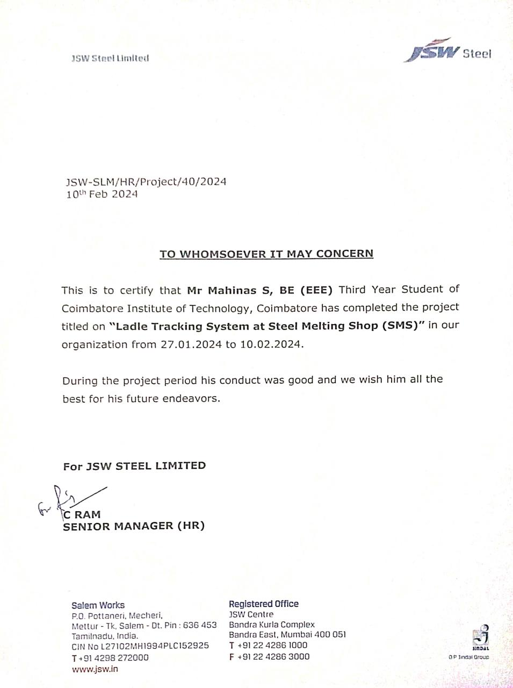

Mahinas S
Electrical and Electronics Engineer
As a graduate, seeking to enhance software programming and data analysis skills within a collaborative academic team to contribute to organizational advancement through technology and innovative solutions.
Featured Projects
View selected projects below. More information can be found at mahinas.com.
LADLE TRACKING SYSTEM
-Developed software for ladle tracking using QR code technology with pyzbar and openCV, utilizing a tkinter framework and included user authentication for enhanced security. - Utilized advanced object detection using yolo algorithm to efficiently track ladles and employed OCR to extract unique numbers for accurate identification. - Applied preprocessing techniques including grayscale conversion, histogram equalization, blurring, thresholding, and contour identification to optimize images for OCR.
ENERGY HARVESTING FROM ROADWAYS FOR AUXILIARY SYSTEM IN ELECTRIC VEHICLE
To minimize the reliance of auxiliary battery on the main traction battery by powering auxiliary systems through a combined renewable energy source such as piezoelectricity and solar power. The output voltage is regulated using the XG-Boost machine learning algorithm to optimally tune the PI controller, ensuring efficient and stable power delivery to auxiliary systems.
Internship
Project Intern
JSW STEEL LTD | SALEM
2 weeks
Understanding the steel making process and the efficient use of Ladle Tracking System for Industrial Automation and implemented the project which empowers with accurate ladle number recognition in SMS
IMPLANT TRAINEE
NEYVELI LIGNITE CORPORATION | NEYVELI
2 weeks
Gained valuable insights on Repairing and Overhauling of Transformer through hands-on practice.
Education
COIMBATORE INSTITUTE OF TECHNOLOGY
BE EEE
CGPA - 7.75*
2021 - 2025
ST. JOHN'S MATRIC HR SEC SCHOOL
HSC
92.98%
2020 - 2021
ST. JOHN'S MATRIC HR SEC SCHOOL
SSLC
94.8%
2018 - 2019